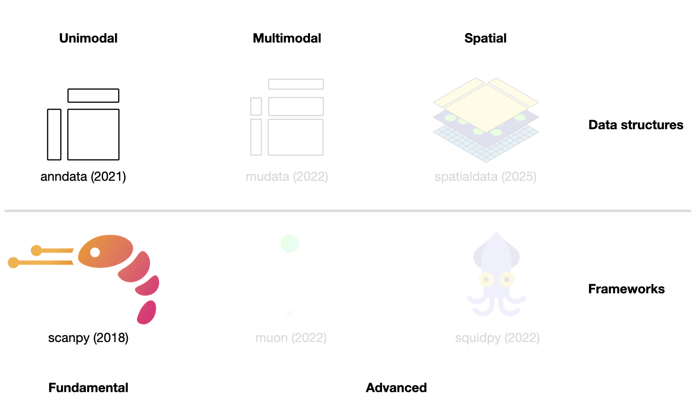
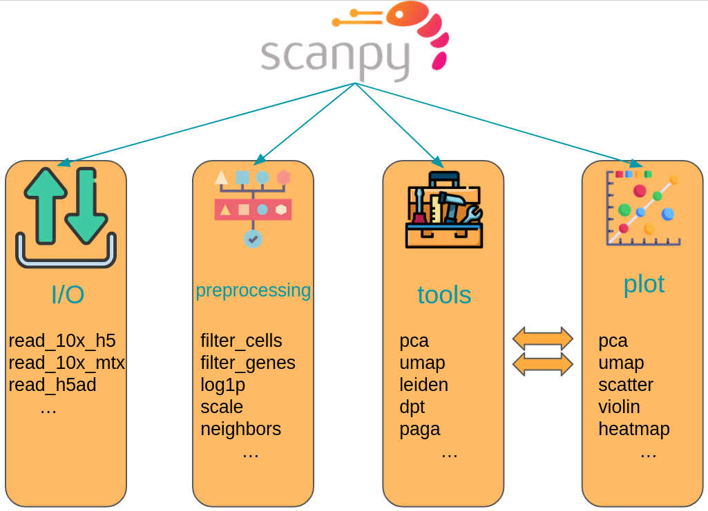

4. 基础数据结构与框架#
关键要点
单细胞分析存在三大生态系统：基于 R 的 Bioconductor 和 Seurat，以及基于 Python 的 scverse。
虽然这些生态系统都被广泛使用，但 scverse 因其可扩展性（可处理 50 万个以上细胞）以及与 Python 的数据和机器学习工具之间的强互操作性而更受青睐。
AnnData 是 scverse 的核心数据结构。它将计数矩阵存储在 .X （细胞 × 基因）中，并将细胞和基因的注释存储在 .obs 和 .var.
AnnData 在设计上注重内存效率。它支持稀疏矩阵、对大文件的后端读取（backed reading），以及基于视图的子集化——除非用 copy 显式复制，否则不会分配新的内存，这一切都借助 .copy().
Scanpy 是构建在 AnnData 之上的主要分析框架。它提供了一套模块化的 API（sc.pp 用于预处理, sc.tl 为工具, sc.pl 用于绘图），涵盖从基础质量控制到降维，再到后续章节所探讨的众多高级分析在内的完整工作流程。
环境设置
安装 conda:
在创建环境之前，请确保 conda 已安装在您的系统中。
保存 yml 内容:
将 yml 选项卡中的内容复制到名为
environment.yml的文件中。
创建环境:
打开终端或命令提示符。
运行以下命令：
conda env create -f environment.yml
激活环境:
创建好环境后，使用以下命令激活它：
conda activate <environment_name>
替换
<environment_name>，名称就是在environment.yml文件中指定的那个。在 yml 文件里，它看起来像这样：name: <environment_name>
验证安装:
通过运行以下命令，检查环境是否创建成功：
conda env list
name: fundamental_data_structures_and_frameworks
channels:
- conda-forge
- bioconda
dependencies:
- conda-forge::anndata=0.12.7
- conda-forge::python=3.13.12
- conda-forge::scanpy=1.12
- conda-forge::ipywidgets=8.1.8
- pip
- pip:
- lamindb
获取数据和笔记本
本书使用 lamindb，并通过 theislab/sc-best-practices 实例 来存储、共享和加载数据集与笔记本。感谢 Lamin Labs 提供免费托管服务。
安装 lamindb
安装 lamindb Python 软件包：
pip install lamindb
可选择创建 lamin 账户
按照以下 说明 注册并登录。
验证你的设置
运行
lamin connect命令：
import lamindb as ln ln.Artifact.connect("theislab/sc-best-practices").df()
你现在应该看到最多100个存储的数据集。
访问数据集（Artifact）
在 Artifacts 页面 搜索该数据集。
加载一个 Artifact 及其对应的对象：
import lamindb as ln af = ln.Artifact.connect("theislab/sc-best-practices").get(key="key_of_dataset", is_latest=True) obj = af.load()
该对象现在已可在内存中访问，并可用于分析。请调整
ln.Artifact.connect("theislab/sc-best-practices").get("SOMEIDXXXX")后缀以获取相应的版本。访问笔记本（Transform）
在 Transforms 页面 搜索该笔记本。
加载笔记本：
lamin load <notebook url>
这会把笔记本下载到当前工作目录。与
Artifacts类似，你可以调整后缀 ID 来获取旧版本。
4.1. 单细胞分析框架与协作联盟#
如前所述，在获得计数矩阵之后，便进入探索性数据分析阶段。早期人们常用自定义脚本分析数据，而如今已有专为此目的而建的框架。最受欢迎的三种选择是基于 R 的 Bioconductor [Huber et al., 2015] 和 Seurat [Hao et al., 2021] 生态系统，以及基于 Python 的 scverse [scverse, 2022] 生态系统。它们的差异不仅在于所使用的编程语言，还在于底层的数据结构和可用的专门分析工具。
Bioconductor 是一个用于严谨、可复现的生物数据分析（包括单细胞分析）的开源项目。它最大的优势在于开发者与用户体验的一致性，以及详尽且易于上手的文档。Seurat 是一个广受好评的单细胞分析 R 包，涵盖了包括多模态和空间数据在内的所有分析步骤，以其撰写精良的教程示例（vignette）和庞大的用户群而著称。这两种 R 方案在处理超大数据集（50 万个以上细胞）时都可能力不从心，这促使 Python 社区开发了 scverse 生态系统。scverse 是一个致力于基础生命科学工具的组织，最初聚焦于单细胞领域。其主要优势包括可扩展性、可拓展性，以及与 Python 数据和机器学习生态系统之间的强互操作性。
所有这三个生态系统都参与了许多旨在实现相关框架互操作性的工作。这一点将在 “互操作性”一章中讨论。本书始终聚焦于针对相应问题的最佳工具，因此会混合使用上述各个生态系统。不过，所有分析的基础都将是 scverse 生态系统，原因有二：
虽然本书中我们会经常切换生态系统乃至编程语言，但始终如一地使用相同的数据结构和工具有助于读者专注于概念本身，而非实现细节。
一本专门讲述 Bioconductor 生态系统的优秀著作 已经存在。我们鼓励只想学习用 Bioconductor 做单细胞分析的读者去阅读它。
在接下来的几节中，我们将更详细地介绍 scverse 生态系统，并围绕最重要的数据结构来讲解其关键概念。本章介绍基础数据结构 AnnData 和 scanpy 框架（参见 图4.1）。 在后续章节中，我们将探索更高级的库。本导言无法涵盖这些数据结构和框架的方方面面，必要时请参阅各框架相应的教程和文档。
{kind=link}

图4.1 scverse 生态系统概览，突出显示本章涉及的库。括号内标注了各库被科学期刊发表的日期。各库的图标取自相应的 GitHub 页面 [Bredikhin et al., 2022, Marconato et al., 2025, Palla et al., 2022, Virshup et al., 2021, Wolf et al., 2018].#
4.2. 使用 AnnData 存储单模态数据#
如前所述，基因组数据通常会先经过比对和基因 注释，然后被汇总为一个特征矩阵。此矩阵的形状为 number_observations x number_variables。在 scRNA-seq 中，观测（observation）是细胞条形码，变量（variable）是注释过的基因。在整个分析过程中，该矩阵的观测和变量会被标注上计算得出的度量（例如质量控制指标或潜空间嵌入）以及先验知识（例如来源供体或替代基因标识符）。在 scverse 生态系统中， AnnData [Virshup et al., 2021] 用于将数据矩阵与这些注释关联起来。为实现快速且省内存的变换，AnnData 还支持 稀疏矩阵 和部分读取。
虽然 AnnData 与 R 生态系统中的数据结构大致相似（例如， Bioconductor 的 SummarizedExperiment 或 Seurat 的对象），但 R 包使用的是转置后的特征矩阵。
其核心是 AnnData 对象存储一个稀疏或稠密的矩阵(scRNA-Seq中的计数矩阵) X。这一矩阵的维度包括: obs_names x var_names，其中 obs（=observations，观测）对应细胞的条形码，var（=variables，变量）对应基因标识符。此矩阵 X 被 Pandas DataFrame obs 和 var所环绕，它们分别保存细胞和基因的注释。此外，AnnData 还会为观测保存整组的计算结果矩阵（obsm)或变量(varm）并具有相应的维度。将细胞与细胞、或基因与基因关联起来的图状结构通常保存在 obsp 和 varp。任何无法归入其他槽位的非结构化数据，都会作为非结构化数据保存在 uns。还可以储存更多的数值 X in layers。其典型用例之一，是把原始的、未归一化的计数数据存储在某个 counts 层中，而把归一化后的数据存储在未命名的默认层中。AnnData 主要是为单模态数据（例如仅 scRNA-Seq）设计的。不过，AnnData 的一些扩展，例如 MuData（将在 下一个章节中介绍），支持高效地存储和访问多模态数据。

图4.2 AnnData 概览。图片取自 [Virshup et al., 2021].#
4.2.1. 安装#
AnnData可在PyPI和Conda上获取。它可以使用以下任一命令安装。
pip install anndata
conda install -c conda-forge anndata
4.2.2. 初始化 AnnData 对象#
本节灵感来自 AnnData 的“入门”教程。让我们创建一个简单的 AnnData 对象，其中包含 稀疏 的计数信息，例如可以表示基因表达计数。首先，我们导入所需的包。
import anndata as ad
import lamindb as ln
import numpy as np
import pandas as pd
from scipy.sparse import csr_matrix
ln.track()
作为下一步，我们用随机的 服从泊松分布 数据来初始化一个 AnnData 对象。按照不成文的惯例，会把分析中主要的那个 AnnData 对象命名为 adata.
counts = csr_matrix(
np.random.default_rng().poisson(1, size=(100, 2000)), dtype=np.float32
)
adata = ad.AnnData(counts)
adata
AnnData object with n_obs × n_vars = 100 × 2000
得到的 AnnData 对象有 100 个观测和 2000 个变量，相当于 100 个细胞、2000 个基因。我们传入的初始数据可以作为稀疏矩阵来访问，使用 adata.X.
adata.X
<Compressed Sparse Row sparse matrix of dtype 'float32'
with 126197 stored elements and shape (100, 2000)>
现在，我们分别为 obs 和 var 两个轴使用 .obs_names 和 .var_names设置索引。
adata.obs_names = [f"Cell_{i:d}" for i in range(adata.n_obs)]
adata.var_names = [f"Gene_{i:d}" for i in range(adata.n_vars)]
print(adata.obs_names[:10])
Index(['Cell_0', 'Cell_1', 'Cell_2', 'Cell_3', 'Cell_4', 'Cell_5', 'Cell_6',
'Cell_7', 'Cell_8', 'Cell_9'],
dtype='object')
4.2.3. 添加对齐的元数据#
4.2.3.1. 观测层面或变量层面#
我们的 AnnData 对象的核心现已就位。下一步，我们在观测层面和变量层面都添加元数据。请记住，我们会把这类注释分别保存在 .obs 和 .var AnnData 对象的相应槽位中，分别用于细胞注释和基因注释。
ct = np.random.default_rng().choice(["B", "T", "Monocyte"], size=(adata.n_obs,))
adata.obs["cell_type"] = pd.Categorical(ct) # Categoricals are preferred for efficiency
adata.obs
| cell_type | |
|---|---|
| Cell_0 | B |
| Cell_1 | T |
| Cell_2 | Monocyte |
| Cell_3 | B |
| Cell_4 | Monocyte |
| ... | ... |
| Cell_95 | T |
| Cell_96 | B |
| Cell_97 | B |
| Cell_98 | T |
| Cell_99 | B |
100 rows × 1 columns
如果现在再次查看 AnnData 对象的表示形式，就会注意到它已随新增的内容而更新——新增了 cell_type 信息 obs 也是如此。
adata
AnnData object with n_obs × n_vars = 100 × 2000
obs: 'cell_type'
4.2.3.2. 使用元数据进行子集化#
我们也可以用随机生成的细胞类型对 AnnData 对象进行子集化。AnnData 对象的切片和掩码操作，与 Pandas DataFrame 或 R 矩阵中的数据访问方式类似。更多细节可参见 下文.
bdata = adata[adata.obs.cell_type == "B"]
bdata
View of AnnData object with n_obs × n_vars = 40 × 2000
obs: 'cell_type'
4.2.4. 观测/变量层面的矩阵#
我们还可能在两个层次都有具有许多维度的元数据，例如数据的 UMAP 嵌入。AnnData有 .obsm/.varm 等属性来存放这类元数据。我们用键（key）来标识所插入的不同矩阵。 .obsm/.varm 的限制在于： .obsm 矩阵的长度必须等于观测数量，即 .n_obs 和 .varm 矩阵的长度必须等于 .n_vars。它们各自可以具有不同的维度。
让我们从一个随机生成的矩阵开始，可以把它理解为我们想要存储的数据的一个 UMAP 嵌入，再加上一些随机的基因级元数据。
adata.obsm["X_umap"] = np.random.default_rng().normal(0, 1, size=(adata.n_obs, 2))
adata.varm["gene_stuff"] = np.random.default_rng().normal(0, 1, size=(adata.n_vars, 5))
adata.obsm
AxisArrays with keys: X_umap
AnnData 的表示形式再次得到更新。
adata
AnnData object with n_obs × n_vars = 100 × 2000
obs: 'cell_type'
obsm: 'X_umap'
varm: 'gene_stuff'
还有几条关于 .obsm/.varm:
这种“类数组”的元数据可以来自 Pandas DataFrame、SciPy 稀疏矩阵或 NumPy 稠密数组。
在使用Scanpy时，其值(列)不易绘制，而来自
.obs很容易在UMAP图上绘制。
4.2.5. 非结构化元数据#
如上所述，AnnData 有 .uns,允许容纳任何非结构化的元数据。它可以是任何东西，例如一个列表或一个字典，包含一些在分析数据时有用的通用信息。请尽量只把无法高效存储在其他槽位中的数据放进这个槽位。
adata.uns["random"] = [1, 2, 3]
adata.uns
OrderedDict([('random', [1, 2, 3])])
4.2.6. 层#
最后，我们的原始核心数据可能有不同的形式，也许一种是归一化的、一种不是。它们可以存放在 AnnData 的不同层中。例如，我们对原始数据做对数变换，并将其存储在一个层里。
adata.layers["log_transformed"] = np.log1p(adata.X)
adata
AnnData object with n_obs × n_vars = 100 × 2000
obs: 'cell_type'
uns: 'random'
obsm: 'X_umap'
varm: 'gene_stuff'
layers: 'log_transformed'
我们的原始矩阵 X 未修改，仍可访问。我们可以通过比较原始的 X 与新层来验证这一点（.nnz 返回布尔矩阵中非零元素的数量）。
(adata.X != adata.layers["log_transformed"]).nnz == 0
False
4.2.7. 转换为 DataFrames#
可以从其中某一层得到一个 Pandas DataFrame。
adata.to_df(layer="log_transformed")
| Gene_0 | Gene_1 | Gene_2 | Gene_3 | Gene_4 | Gene_5 | Gene_6 | Gene_7 | Gene_8 | Gene_9 | Gene_10 | Gene_11 | Gene_12 | Gene_13 | Gene_14 | Gene_15 | Gene_16 | Gene_17 | Gene_18 | Gene_19 | Gene_20 | Gene_21 | Gene_22 | Gene_23 | Gene_24 | Gene_25 | Gene_26 | Gene_27 | Gene_28 | Gene_29 | Gene_30 | Gene_31 | Gene_32 | Gene_33 | Gene_34 | Gene_35 | Gene_36 | Gene_37 | Gene_38 | Gene_39 | Gene_40 | Gene_41 | Gene_42 | Gene_43 | Gene_44 | Gene_45 | Gene_46 | Gene_47 | Gene_48 | Gene_49 | Gene_50 | Gene_51 | Gene_52 | Gene_53 | Gene_54 | Gene_55 | Gene_56 | Gene_57 | Gene_58 | Gene_59 | Gene_60 | Gene_61 | Gene_62 | Gene_63 | Gene_64 | Gene_65 | Gene_66 | Gene_67 | Gene_68 | Gene_69 | Gene_70 | Gene_71 | Gene_72 | Gene_73 | Gene_74 | Gene_75 | Gene_76 | Gene_77 | Gene_78 | Gene_79 | Gene_80 | Gene_81 | Gene_82 | Gene_83 | Gene_84 | Gene_85 | Gene_86 | Gene_87 | Gene_88 | Gene_89 | Gene_90 | Gene_91 | Gene_92 | Gene_93 | Gene_94 | Gene_95 | Gene_96 | Gene_97 | Gene_98 | Gene_99 | ... | Gene_1900 | Gene_1901 | Gene_1902 | Gene_1903 | Gene_1904 | Gene_1905 | Gene_1906 | Gene_1907 | Gene_1908 | Gene_1909 | Gene_1910 | Gene_1911 | Gene_1912 | Gene_1913 | Gene_1914 | Gene_1915 | Gene_1916 | Gene_1917 | Gene_1918 | Gene_1919 | Gene_1920 | Gene_1921 | Gene_1922 | Gene_1923 | Gene_1924 | Gene_1925 | Gene_1926 | Gene_1927 | Gene_1928 | Gene_1929 | Gene_1930 | Gene_1931 | Gene_1932 | Gene_1933 | Gene_1934 | Gene_1935 | Gene_1936 | Gene_1937 | Gene_1938 | Gene_1939 | Gene_1940 | Gene_1941 | Gene_1942 | Gene_1943 | Gene_1944 | Gene_1945 | Gene_1946 | Gene_1947 | Gene_1948 | Gene_1949 | Gene_1950 | Gene_1951 | Gene_1952 | Gene_1953 | Gene_1954 | Gene_1955 | Gene_1956 | Gene_1957 | Gene_1958 | Gene_1959 | Gene_1960 | Gene_1961 | Gene_1962 | Gene_1963 | Gene_1964 | Gene_1965 | Gene_1966 | Gene_1967 | Gene_1968 | Gene_1969 | Gene_1970 | Gene_1971 | Gene_1972 | Gene_1973 | Gene_1974 | Gene_1975 | Gene_1976 | Gene_1977 | Gene_1978 | Gene_1979 | Gene_1980 | Gene_1981 | Gene_1982 | Gene_1983 | Gene_1984 | Gene_1985 | Gene_1986 | Gene_1987 | Gene_1988 | Gene_1989 | Gene_1990 | Gene_1991 | Gene_1992 | Gene_1993 | Gene_1994 | Gene_1995 | Gene_1996 | Gene_1997 | Gene_1998 | Gene_1999 | |
|---|---|---|---|---|---|---|---|---|---|---|---|---|---|---|---|---|---|---|---|---|---|---|---|---|---|---|---|---|---|---|---|---|---|---|---|---|---|---|---|---|---|---|---|---|---|---|---|---|---|---|---|---|---|---|---|---|---|---|---|---|---|---|---|---|---|---|---|---|---|---|---|---|---|---|---|---|---|---|---|---|---|---|---|---|---|---|---|---|---|---|---|---|---|---|---|---|---|---|---|---|---|---|---|---|---|---|---|---|---|---|---|---|---|---|---|---|---|---|---|---|---|---|---|---|---|---|---|---|---|---|---|---|---|---|---|---|---|---|---|---|---|---|---|---|---|---|---|---|---|---|---|---|---|---|---|---|---|---|---|---|---|---|---|---|---|---|---|---|---|---|---|---|---|---|---|---|---|---|---|---|---|---|---|---|---|---|---|---|---|---|---|---|---|---|---|---|---|---|---|---|---|
| Cell_0 | 0.000000 | 0.693147 | 0.693147 | 0.693147 | 0.693147 | 0.693147 | 0.000000 | 0.000000 | 0.693147 | 0.000000 | 0.000000 | 0.000000 | 0.000000 | 1.098612 | 0.000000 | 1.098612 | 1.098612 | 1.098612 | 0.693147 | 0.000000 | 1.098612 | 0.000000 | 0.693147 | 0.693147 | 0.693147 | 0.000000 | 0.000000 | 0.000000 | 0.000000 | 1.098612 | 0.693147 | 0.000000 | 1.098612 | 1.386294 | 1.609438 | 0.000000 | 1.386294 | 0.693147 | 0.000000 | 0.000000 | 0.693147 | 0.000000 | 0.000000 | 1.098612 | 0.693147 | 1.386294 | 0.000000 | 0.000000 | 0.693147 | 0.000000 | 0.000000 | 0.000000 | 0.000000 | 0.693147 | 0.000000 | 0.693147 | 0.000000 | 0.693147 | 1.386294 | 0.000000 | 0.000000 | 0.000000 | 0.000000 | 0.693147 | 0.693147 | 1.609438 | 0.000000 | 0.693147 | 0.693147 | 0.000000 | 0.000000 | 1.098612 | 1.098612 | 0.693147 | 1.098612 | 0.000000 | 0.693147 | 0.000000 | 1.098612 | 0.000000 | 0.000000 | 0.693147 | 1.098612 | 0.000000 | 0.693147 | 1.098612 | 1.098612 | 0.693147 | 0.693147 | 0.693147 | 0.693147 | 1.098612 | 1.098612 | 0.000000 | 1.386294 | 0.000000 | 0.693147 | 0.000000 | 0.000000 | 0.693147 | ... | 0.693147 | 1.098612 | 0.693147 | 0.693147 | 0.000000 | 0.693147 | 0.693147 | 0.693147 | 0.693147 | 0.000000 | 1.098612 | 0.000000 | 1.098612 | 0.000000 | 1.098612 | 1.386294 | 0.693147 | 0.000000 | 0.693147 | 1.098612 | 0.000000 | 0.000000 | 1.098612 | 0.000000 | 0.000000 | 0.693147 | 0.693147 | 0.693147 | 1.386294 | 1.098612 | 0.693147 | 0.693147 | 0.693147 | 0.693147 | 0.000000 | 1.386294 | 0.000000 | 0.000000 | 1.386294 | 0.000000 | 0.000000 | 0.693147 | 1.098612 | 0.000000 | 0.693147 | 0.000000 | 1.386294 | 1.098612 | 0.693147 | 0.693147 | 1.386294 | 0.000000 | 0.000000 | 1.386294 | 0.693147 | 1.098612 | 0.693147 | 0.693147 | 1.098612 | 1.386294 | 0.693147 | 0.000000 | 0.000000 | 0.000000 | 1.098612 | 0.693147 | 0.693147 | 1.386294 | 1.098612 | 0.693147 | 0.000000 | 0.693147 | 0.000000 | 0.000000 | 0.000000 | 0.000000 | 1.098612 | 0.000000 | 1.609438 | 1.098612 | 1.386294 | 0.000000 | 0.693147 | 1.386294 | 1.386294 | 0.693147 | 0.693147 | 1.386294 | 0.693147 | 0.000000 | 0.693147 | 0.000000 | 0.000000 | 0.000000 | 0.693147 | 0.693147 | 0.000000 | 1.098612 | 0.000000 | 0.693147 |
| Cell_1 | 0.000000 | 0.693147 | 0.000000 | 0.693147 | 0.000000 | 0.693147 | 1.098612 | 1.098612 | 1.098612 | 0.000000 | 0.693147 | 0.693147 | 0.693147 | 1.098612 | 0.000000 | 0.000000 | 0.000000 | 0.693147 | 1.386294 | 0.000000 | 1.386294 | 0.693147 | 0.000000 | 0.000000 | 0.000000 | 0.693147 | 1.386294 | 1.609438 | 1.098612 | 0.000000 | 1.098612 | 1.098612 | 0.693147 | 0.000000 | 0.693147 | 1.098612 | 1.098612 | 1.098612 | 1.098612 | 0.693147 | 0.000000 | 1.098612 | 0.000000 | 0.000000 | 0.000000 | 0.000000 | 0.000000 | 0.000000 | 1.098612 | 0.000000 | 0.000000 | 1.098612 | 0.693147 | 0.693147 | 0.000000 | 0.000000 | 0.000000 | 0.000000 | 1.098612 | 0.693147 | 0.000000 | 1.609438 | 1.098612 | 1.098612 | 1.386294 | 0.693147 | 0.000000 | 1.098612 | 0.000000 | 0.000000 | 1.098612 | 1.098612 | 0.000000 | 0.693147 | 0.693147 | 1.386294 | 0.000000 | 0.693147 | 0.000000 | 0.693147 | 0.000000 | 0.000000 | 1.386294 | 0.693147 | 0.693147 | 0.000000 | 0.693147 | 0.693147 | 0.693147 | 0.000000 | 0.693147 | 0.693147 | 0.000000 | 1.098612 | 1.386294 | 0.000000 | 0.693147 | 0.000000 | 1.098612 | 1.098612 | ... | 0.693147 | 0.693147 | 1.098612 | 1.098612 | 0.000000 | 0.693147 | 0.693147 | 0.693147 | 0.000000 | 0.693147 | 1.386294 | 0.000000 | 0.000000 | 1.098612 | 0.000000 | 0.693147 | 1.609438 | 1.098612 | 0.000000 | 0.693147 | 0.000000 | 0.000000 | 1.098612 | 0.693147 | 0.000000 | 0.000000 | 1.098612 | 0.000000 | 0.000000 | 0.693147 | 0.693147 | 0.000000 | 0.693147 | 0.000000 | 0.000000 | 0.693147 | 0.693147 | 0.000000 | 0.000000 | 1.098612 | 0.693147 | 0.693147 | 1.098612 | 0.693147 | 0.000000 | 0.693147 | 0.000000 | 0.000000 | 0.000000 | 0.000000 | 0.693147 | 0.000000 | 0.000000 | 0.693147 | 0.000000 | 0.000000 | 0.693147 | 0.693147 | 0.693147 | 1.098612 | 0.000000 | 1.386294 | 0.693147 | 0.000000 | 0.000000 | 0.000000 | 0.000000 | 0.693147 | 0.693147 | 0.000000 | 1.098612 | 0.000000 | 0.000000 | 0.000000 | 0.693147 | 0.693147 | 0.000000 | 1.098612 | 0.000000 | 0.000000 | 0.000000 | 0.693147 | 0.693147 | 0.000000 | 0.000000 | 0.000000 | 1.098612 | 0.693147 | 0.693147 | 0.000000 | 1.098612 | 0.000000 | 1.098612 | 0.000000 | 0.000000 | 0.000000 | 0.000000 | 0.693147 | 0.000000 | 1.098612 |
| Cell_2 | 0.693147 | 1.098612 | 1.098612 | 1.386294 | 0.000000 | 0.693147 | 1.098612 | 0.693147 | 0.000000 | 0.693147 | 0.693147 | 0.000000 | 0.000000 | 1.386294 | 0.000000 | 0.693147 | 1.098612 | 0.000000 | 1.386294 | 1.386294 | 1.098612 | 0.000000 | 0.000000 | 0.693147 | 0.693147 | 0.693147 | 0.693147 | 0.693147 | 0.000000 | 0.693147 | 0.000000 | 1.098612 | 0.000000 | 0.000000 | 1.098612 | 0.693147 | 0.693147 | 1.098612 | 1.386294 | 1.098612 | 0.693147 | 0.693147 | 0.693147 | 0.000000 | 1.386294 | 0.693147 | 0.693147 | 0.693147 | 0.000000 | 0.693147 | 0.693147 | 1.098612 | 0.693147 | 0.000000 | 0.693147 | 1.386294 | 0.000000 | 0.000000 | 0.000000 | 0.693147 | 0.000000 | 0.693147 | 1.098612 | 0.693147 | 0.693147 | 0.693147 | 1.386294 | 0.693147 | 0.693147 | 0.000000 | 1.609438 | 0.693147 | 0.000000 | 0.000000 | 1.098612 | 0.693147 | 0.693147 | 0.693147 | 0.693147 | 1.098612 | 0.000000 | 0.693147 | 1.098612 | 0.000000 | 0.000000 | 0.000000 | 0.693147 | 0.693147 | 1.098612 | 1.609438 | 0.000000 | 0.693147 | 0.000000 | 0.693147 | 0.693147 | 0.000000 | 0.693147 | 0.000000 | 0.000000 | 0.000000 | ... | 1.098612 | 1.098612 | 0.693147 | 0.000000 | 0.693147 | 0.693147 | 0.000000 | 0.693147 | 1.098612 | 1.386294 | 0.693147 | 0.000000 | 0.693147 | 0.693147 | 0.000000 | 0.000000 | 1.098612 | 0.000000 | 0.693147 | 1.098612 | 0.693147 | 1.098612 | 0.693147 | 0.000000 | 0.693147 | 1.098612 | 0.000000 | 0.000000 | 1.098612 | 0.693147 | 0.000000 | 0.000000 | 1.098612 | 0.693147 | 0.693147 | 1.098612 | 0.000000 | 0.693147 | 0.693147 | 0.000000 | 0.000000 | 0.000000 | 1.098612 | 0.693147 | 1.098612 | 0.000000 | 0.693147 | 0.693147 | 0.000000 | 0.000000 | 0.000000 | 0.693147 | 1.098612 | 0.693147 | 0.000000 | 0.693147 | 0.000000 | 0.693147 | 0.000000 | 0.693147 | 1.386294 | 0.000000 | 0.000000 | 0.000000 | 0.693147 | 0.000000 | 0.693147 | 0.000000 | 0.693147 | 0.000000 | 1.386294 | 1.098612 | 1.098612 | 0.693147 | 0.693147 | 0.000000 | 0.000000 | 0.000000 | 0.000000 | 0.000000 | 0.693147 | 0.693147 | 0.693147 | 1.098612 | 1.098612 | 0.693147 | 0.693147 | 0.000000 | 0.000000 | 0.693147 | 0.000000 | 0.000000 | 0.693147 | 0.000000 | 0.000000 | 0.000000 | 0.693147 | 0.693147 | 0.000000 | 0.000000 |
| Cell_3 | 0.000000 | 1.098612 | 0.693147 | 0.693147 | 0.000000 | 0.693147 | 0.000000 | 1.386294 | 1.098612 | 0.693147 | 1.386294 | 0.693147 | 0.693147 | 1.098612 | 0.693147 | 1.098612 | 0.000000 | 1.098612 | 0.693147 | 1.098612 | 1.386294 | 0.693147 | 0.693147 | 0.693147 | 1.098612 | 0.693147 | 0.693147 | 0.693147 | 0.000000 | 1.098612 | 1.386294 | 0.000000 | 1.098612 | 0.693147 | 1.609438 | 0.000000 | 0.000000 | 0.000000 | 0.693147 | 0.000000 | 1.098612 | 0.000000 | 0.000000 | 0.000000 | 1.098612 | 1.098612 | 1.098612 | 0.693147 | 0.000000 | 0.693147 | 0.000000 | 0.693147 | 0.000000 | 0.000000 | 1.098612 | 1.098612 | 1.098612 | 1.098612 | 0.000000 | 0.693147 | 1.386294 | 0.693147 | 0.693147 | 0.000000 | 0.000000 | 1.386294 | 0.000000 | 0.693147 | 0.000000 | 1.098612 | 0.000000 | 0.693147 | 0.000000 | 1.098612 | 0.693147 | 0.693147 | 0.000000 | 0.000000 | 0.000000 | 1.098612 | 1.386294 | 0.693147 | 0.000000 | 0.693147 | 1.386294 | 1.386294 | 0.693147 | 0.000000 | 0.000000 | 0.000000 | 0.693147 | 0.000000 | 1.098612 | 0.693147 | 0.000000 | 0.693147 | 0.000000 | 1.098612 | 0.693147 | 0.000000 | ... | 1.098612 | 0.000000 | 0.000000 | 0.000000 | 0.000000 | 0.693147 | 0.000000 | 0.693147 | 1.098612 | 1.386294 | 1.098612 | 1.386294 | 1.098612 | 0.000000 | 0.693147 | 0.000000 | 0.000000 | 1.098612 | 0.693147 | 0.693147 | 0.693147 | 1.386294 | 0.693147 | 0.000000 | 0.693147 | 1.386294 | 1.098612 | 0.000000 | 0.693147 | 0.000000 | 0.693147 | 0.693147 | 1.098612 | 1.386294 | 1.098612 | 1.098612 | 0.000000 | 0.000000 | 0.693147 | 0.693147 | 0.693147 | 0.693147 | 0.693147 | 1.386294 | 0.693147 | 1.098612 | 0.000000 | 0.000000 | 1.098612 | 1.098612 | 1.098612 | 0.000000 | 0.000000 | 0.000000 | 0.000000 | 0.693147 | 1.386294 | 0.693147 | 0.000000 | 1.386294 | 1.098612 | 1.098612 | 1.098612 | 1.098612 | 1.386294 | 0.000000 | 1.386294 | 1.098612 | 0.693147 | 1.098612 | 0.000000 | 0.693147 | 1.098612 | 0.000000 | 1.386294 | 1.098612 | 1.098612 | 0.000000 | 0.000000 | 0.000000 | 0.693147 | 0.693147 | 1.098612 | 0.693147 | 0.693147 | 0.693147 | 1.386294 | 0.693147 | 0.000000 | 0.693147 | 1.609438 | 0.693147 | 0.000000 | 0.000000 | 0.000000 | 0.693147 | 0.693147 | 1.098612 | 0.000000 | 1.098612 |
| Cell_4 | 0.000000 | 0.693147 | 1.386294 | 0.693147 | 0.693147 | 1.609438 | 0.693147 | 0.000000 | 0.693147 | 0.693147 | 0.000000 | 0.693147 | 0.000000 | 0.000000 | 0.693147 | 0.000000 | 0.693147 | 0.000000 | 0.000000 | 1.098612 | 0.693147 | 1.386294 | 0.000000 | 0.693147 | 1.098612 | 0.000000 | 0.693147 | 0.693147 | 0.693147 | 0.693147 | 0.000000 | 0.000000 | 1.098612 | 0.693147 | 1.098612 | 0.000000 | 0.000000 | 0.000000 | 1.386294 | 0.000000 | 1.386294 | 0.693147 | 0.693147 | 0.000000 | 0.693147 | 0.693147 | 0.693147 | 1.098612 | 1.098612 | 0.000000 | 0.693147 | 0.693147 | 0.693147 | 0.693147 | 0.693147 | 0.693147 | 0.693147 | 0.000000 | 0.693147 | 0.693147 | 1.098612 | 0.000000 | 0.000000 | 0.693147 | 1.098612 | 0.693147 | 0.693147 | 0.693147 | 1.098612 | 0.693147 | 1.098612 | 1.098612 | 1.098612 | 0.000000 | 1.098612 | 0.000000 | 1.098612 | 0.000000 | 0.693147 | 0.693147 | 1.098612 | 0.693147 | 0.000000 | 0.000000 | 0.693147 | 0.000000 | 1.098612 | 0.000000 | 0.693147 | 1.098612 | 0.000000 | 0.000000 | 0.000000 | 0.000000 | 0.000000 | 0.693147 | 1.098612 | 0.693147 | 0.000000 | 0.000000 | ... | 0.000000 | 0.693147 | 0.693147 | 1.098612 | 0.693147 | 0.693147 | 0.000000 | 0.693147 | 0.693147 | 0.000000 | 1.098612 | 0.000000 | 1.098612 | 0.693147 | 1.386294 | 0.000000 | 0.693147 | 0.000000 | 0.000000 | 0.000000 | 1.609438 | 0.693147 | 0.693147 | 0.693147 | 0.000000 | 1.386294 | 0.000000 | 1.098612 | 0.693147 | 0.000000 | 1.098612 | 0.693147 | 0.693147 | 0.693147 | 0.000000 | 0.000000 | 0.693147 | 0.000000 | 0.693147 | 1.098612 | 0.693147 | 0.000000 | 0.000000 | 0.000000 | 1.098612 | 0.693147 | 0.693147 | 0.693147 | 1.386294 | 1.098612 | 0.000000 | 0.000000 | 0.693147 | 1.386294 | 0.693147 | 0.693147 | 0.000000 | 0.000000 | 0.693147 | 1.098612 | 0.000000 | 0.693147 | 0.000000 | 1.386294 | 0.000000 | 1.098612 | 1.386294 | 0.693147 | 0.000000 | 0.693147 | 1.098612 | 1.098612 | 1.098612 | 0.693147 | 1.386294 | 1.098612 | 1.098612 | 0.693147 | 0.693147 | 1.609438 | 0.693147 | 0.693147 | 1.098612 | 0.000000 | 0.693147 | 1.098612 | 1.098612 | 1.098612 | 0.000000 | 0.000000 | 0.693147 | 0.000000 | 0.693147 | 0.693147 | 0.693147 | 1.386294 | 0.693147 | 1.098612 | 0.693147 | 0.693147 |
| ... | ... | ... | ... | ... | ... | ... | ... | ... | ... | ... | ... | ... | ... | ... | ... | ... | ... | ... | ... | ... | ... | ... | ... | ... | ... | ... | ... | ... | ... | ... | ... | ... | ... | ... | ... | ... | ... | ... | ... | ... | ... | ... | ... | ... | ... | ... | ... | ... | ... | ... | ... | ... | ... | ... | ... | ... | ... | ... | ... | ... | ... | ... | ... | ... | ... | ... | ... | ... | ... | ... | ... | ... | ... | ... | ... | ... | ... | ... | ... | ... | ... | ... | ... | ... | ... | ... | ... | ... | ... | ... | ... | ... | ... | ... | ... | ... | ... | ... | ... | ... | ... | ... | ... | ... | ... | ... | ... | ... | ... | ... | ... | ... | ... | ... | ... | ... | ... | ... | ... | ... | ... | ... | ... | ... | ... | ... | ... | ... | ... | ... | ... | ... | ... | ... | ... | ... | ... | ... | ... | ... | ... | ... | ... | ... | ... | ... | ... | ... | ... | ... | ... | ... | ... | ... | ... | ... | ... | ... | ... | ... | ... | ... | ... | ... | ... | ... | ... | ... | ... | ... | ... | ... | ... | ... | ... | ... | ... | ... | ... | ... | ... | ... | ... | ... | ... | ... | ... | ... | ... | ... | ... | ... | ... | ... | ... | ... | ... | ... | ... | ... | ... |
| Cell_95 | 0.000000 | 0.693147 | 1.098612 | 0.693147 | 1.098612 | 0.000000 | 0.693147 | 0.693147 | 0.693147 | 0.000000 | 0.693147 | 1.098612 | 0.000000 | 0.000000 | 0.000000 | 0.000000 | 0.693147 | 1.609438 | 0.000000 | 0.000000 | 0.693147 | 0.693147 | 1.386294 | 1.098612 | 0.693147 | 0.000000 | 0.693147 | 0.000000 | 0.000000 | 0.693147 | 0.693147 | 0.000000 | 1.098612 | 0.693147 | 0.000000 | 1.098612 | 1.098612 | 1.098612 | 0.000000 | 0.693147 | 0.693147 | 0.693147 | 0.000000 | 0.000000 | 0.693147 | 0.000000 | 0.693147 | 1.098612 | 1.098612 | 0.000000 | 0.000000 | 0.693147 | 0.000000 | 1.098612 | 0.693147 | 0.693147 | 0.000000 | 0.000000 | 0.693147 | 1.098612 | 0.693147 | 0.000000 | 0.000000 | 0.000000 | 1.386294 | 0.000000 | 0.000000 | 0.693147 | 0.000000 | 0.000000 | 0.693147 | 0.693147 | 0.693147 | 0.693147 | 0.000000 | 0.693147 | 0.693147 | 0.693147 | 1.098612 | 1.386294 | 1.609438 | 0.693147 | 1.098612 | 1.098612 | 0.693147 | 0.693147 | 0.693147 | 0.693147 | 0.693147 | 0.000000 | 0.693147 | 0.000000 | 0.693147 | 0.000000 | 1.386294 | 0.000000 | 0.693147 | 1.098612 | 0.693147 | 0.693147 | ... | 0.000000 | 1.386294 | 1.098612 | 1.609438 | 0.693147 | 1.098612 | 1.386294 | 1.386294 | 0.693147 | 0.000000 | 0.000000 | 1.386294 | 0.000000 | 0.693147 | 0.693147 | 1.098612 | 0.693147 | 1.098612 | 0.693147 | 1.098612 | 0.000000 | 0.000000 | 0.693147 | 0.000000 | 0.693147 | 0.693147 | 0.000000 | 0.693147 | 1.386294 | 0.000000 | 0.000000 | 0.693147 | 0.000000 | 0.000000 | 0.000000 | 0.000000 | 0.693147 | 0.693147 | 0.000000 | 1.098612 | 1.098612 | 1.098612 | 1.098612 | 0.000000 | 0.000000 | 0.693147 | 1.386294 | 0.000000 | 1.386294 | 0.000000 | 0.000000 | 1.098612 | 1.098612 | 0.000000 | 0.000000 | 1.098612 | 0.000000 | 0.000000 | 0.693147 | 0.693147 | 1.098612 | 1.098612 | 1.098612 | 0.000000 | 0.000000 | 0.693147 | 0.000000 | 0.000000 | 0.000000 | 0.693147 | 0.000000 | 0.693147 | 0.000000 | 1.098612 | 0.000000 | 1.098612 | 0.000000 | 0.000000 | 0.693147 | 0.693147 | 0.693147 | 0.693147 | 0.693147 | 0.000000 | 0.693147 | 0.000000 | 0.000000 | 0.693147 | 0.000000 | 1.098612 | 0.693147 | 0.000000 | 0.000000 | 1.098612 | 0.693147 | 0.000000 | 0.693147 | 0.693147 | 1.098612 | 1.098612 |
| Cell_96 | 1.098612 | 0.000000 | 0.693147 | 0.000000 | 1.098612 | 1.098612 | 1.098612 | 0.000000 | 0.000000 | 0.000000 | 0.000000 | 0.693147 | 0.000000 | 0.693147 | 0.000000 | 1.098612 | 0.000000 | 1.098612 | 1.386294 | 0.693147 | 0.693147 | 0.693147 | 1.098612 | 0.693147 | 1.098612 | 0.693147 | 0.693147 | 1.098612 | 0.000000 | 1.609438 | 0.000000 | 1.098612 | 0.693147 | 0.693147 | 1.386294 | 1.098612 | 1.098612 | 0.693147 | 0.000000 | 0.693147 | 0.693147 | 0.693147 | 0.693147 | 0.693147 | 0.693147 | 1.098612 | 0.693147 | 1.098612 | 1.098612 | 0.000000 | 0.000000 | 0.000000 | 0.000000 | 0.000000 | 0.000000 | 0.000000 | 0.000000 | 0.000000 | 1.386294 | 1.098612 | 0.693147 | 1.098612 | 0.000000 | 0.693147 | 0.693147 | 0.693147 | 1.386294 | 0.693147 | 0.000000 | 0.000000 | 0.693147 | 0.000000 | 0.693147 | 0.000000 | 0.000000 | 1.098612 | 1.098612 | 0.000000 | 0.693147 | 0.000000 | 0.000000 | 0.000000 | 0.000000 | 1.098612 | 0.000000 | 0.693147 | 0.000000 | 0.000000 | 0.693147 | 0.693147 | 0.000000 | 1.098612 | 0.000000 | 0.693147 | 1.098612 | 0.693147 | 0.000000 | 0.693147 | 0.000000 | 0.000000 | ... | 0.000000 | 0.693147 | 0.693147 | 1.098612 | 0.000000 | 1.098612 | 0.000000 | 1.386294 | 0.693147 | 1.098612 | 1.098612 | 0.693147 | 0.000000 | 1.098612 | 0.693147 | 1.098612 | 0.693147 | 1.609438 | 0.693147 | 0.000000 | 0.693147 | 0.693147 | 0.000000 | 0.000000 | 0.693147 | 0.693147 | 0.000000 | 0.693147 | 0.000000 | 0.000000 | 1.098612 | 0.693147 | 0.000000 | 0.693147 | 1.386294 | 0.000000 | 1.098612 | 0.693147 | 0.000000 | 0.000000 | 0.000000 | 0.693147 | 0.693147 | 0.000000 | 0.000000 | 0.693147 | 0.693147 | 0.693147 | 0.693147 | 0.000000 | 0.000000 | 0.693147 | 1.386294 | 1.098612 | 0.693147 | 0.000000 | 0.000000 | 1.098612 | 0.693147 | 0.693147 | 0.000000 | 0.693147 | 1.098612 | 0.000000 | 1.098612 | 0.000000 | 0.693147 | 1.609438 | 0.693147 | 0.693147 | 0.000000 | 1.098612 | 0.693147 | 1.098612 | 0.000000 | 0.000000 | 0.000000 | 0.693147 | 1.098612 | 0.693147 | 0.000000 | 1.945910 | 1.098612 | 0.693147 | 0.000000 | 0.693147 | 1.098612 | 0.693147 | 1.098612 | 0.693147 | 0.000000 | 1.098612 | 1.098612 | 1.098612 | 1.098612 | 0.693147 | 0.000000 | 1.098612 | 1.386294 | 0.693147 |
| Cell_97 | 0.693147 | 0.693147 | 0.000000 | 1.386294 | 0.693147 | 0.693147 | 1.098612 | 1.098612 | 0.693147 | 0.000000 | 0.693147 | 0.693147 | 0.000000 | 0.693147 | 0.000000 | 0.000000 | 0.000000 | 0.693147 | 0.000000 | 0.693147 | 0.693147 | 1.386294 | 0.000000 | 1.098612 | 0.693147 | 0.693147 | 0.693147 | 0.000000 | 0.693147 | 1.098612 | 0.000000 | 1.098612 | 1.098612 | 0.000000 | 0.000000 | 0.000000 | 1.098612 | 0.693147 | 0.000000 | 1.098612 | 0.693147 | 1.386294 | 1.098612 | 0.000000 | 0.693147 | 0.693147 | 0.693147 | 0.693147 | 0.693147 | 0.000000 | 0.000000 | 1.098612 | 0.693147 | 1.386294 | 0.000000 | 1.098612 | 1.098612 | 0.693147 | 0.000000 | 0.693147 | 0.693147 | 0.693147 | 1.098612 | 0.693147 | 1.098612 | 1.386294 | 0.000000 | 0.693147 | 0.693147 | 1.098612 | 0.693147 | 1.098612 | 0.000000 | 0.693147 | 0.000000 | 0.693147 | 1.098612 | 0.000000 | 0.000000 | 0.000000 | 1.098612 | 0.000000 | 0.693147 | 0.000000 | 0.000000 | 0.693147 | 0.000000 | 0.000000 | 1.098612 | 1.098612 | 0.000000 | 1.098612 | 0.693147 | 0.000000 | 0.693147 | 1.098612 | 0.000000 | 0.693147 | 0.000000 | 0.000000 | ... | 0.000000 | 0.000000 | 0.693147 | 0.693147 | 0.693147 | 0.000000 | 1.098612 | 0.693147 | 0.693147 | 0.000000 | 0.693147 | 1.098612 | 0.693147 | 0.693147 | 0.693147 | 0.000000 | 0.000000 | 0.693147 | 0.000000 | 0.000000 | 0.693147 | 0.000000 | 0.693147 | 0.000000 | 0.000000 | 1.098612 | 1.098612 | 0.693147 | 0.000000 | 1.386294 | 0.000000 | 0.693147 | 1.098612 | 0.000000 | 0.693147 | 1.386294 | 0.693147 | 1.098612 | 1.098612 | 0.000000 | 0.000000 | 0.000000 | 0.000000 | 0.693147 | 0.000000 | 1.098612 | 1.386294 | 0.693147 | 0.693147 | 0.000000 | 1.386294 | 0.693147 | 0.693147 | 1.098612 | 0.693147 | 0.000000 | 0.693147 | 0.000000 | 1.386294 | 0.693147 | 1.098612 | 0.000000 | 0.693147 | 0.000000 | 1.098612 | 0.000000 | 1.098612 | 0.693147 | 1.386294 | 0.693147 | 1.098612 | 0.000000 | 0.693147 | 0.000000 | 0.000000 | 0.000000 | 1.791759 | 1.098612 | 1.098612 | 0.693147 | 0.693147 | 0.693147 | 0.693147 | 0.693147 | 1.609438 | 0.000000 | 0.693147 | 0.693147 | 1.098612 | 0.000000 | 0.000000 | 0.000000 | 0.693147 | 0.693147 | 0.693147 | 0.693147 | 1.098612 | 0.693147 | 1.386294 | 1.098612 |
| Cell_98 | 0.000000 | 0.693147 | 0.000000 | 0.693147 | 0.693147 | 0.000000 | 1.386294 | 0.000000 | 0.693147 | 0.693147 | 0.000000 | 1.098612 | 0.000000 | 1.098612 | 0.000000 | 0.693147 | 1.098612 | 0.693147 | 0.000000 | 1.098612 | 0.000000 | 0.693147 | 1.609438 | 0.693147 | 0.693147 | 0.000000 | 1.098612 | 0.693147 | 0.693147 | 1.386294 | 0.000000 | 0.693147 | 0.693147 | 0.693147 | 0.000000 | 0.000000 | 1.609438 | 0.000000 | 1.098612 | 0.693147 | 0.693147 | 1.098612 | 0.693147 | 1.098612 | 0.693147 | 1.098612 | 1.098612 | 0.693147 | 0.693147 | 0.693147 | 0.693147 | 0.000000 | 0.000000 | 0.000000 | 0.693147 | 0.000000 | 0.693147 | 0.000000 | 0.000000 | 1.098612 | 0.000000 | 1.098612 | 0.693147 | 0.000000 | 0.000000 | 1.098612 | 0.000000 | 0.000000 | 0.693147 | 0.000000 | 0.000000 | 1.098612 | 0.000000 | 0.000000 | 0.000000 | 0.000000 | 0.000000 | 0.000000 | 1.609438 | 0.693147 | 0.693147 | 1.098612 | 0.693147 | 0.693147 | 0.000000 | 0.000000 | 0.000000 | 1.386294 | 0.693147 | 1.098612 | 0.693147 | 1.098612 | 0.693147 | 0.693147 | 0.000000 | 0.693147 | 0.000000 | 0.693147 | 0.693147 | 0.693147 | ... | 1.098612 | 0.693147 | 1.098612 | 0.693147 | 1.386294 | 1.098612 | 0.000000 | 0.000000 | 1.098612 | 0.693147 | 0.000000 | 0.000000 | 0.000000 | 1.609438 | 0.693147 | 0.693147 | 0.000000 | 0.693147 | 0.000000 | 1.098612 | 1.098612 | 0.000000 | 0.693147 | 1.098612 | 0.000000 | 0.000000 | 0.000000 | 0.000000 | 0.693147 | 0.000000 | 0.693147 | 0.693147 | 0.000000 | 0.000000 | 0.000000 | 0.693147 | 1.386294 | 0.693147 | 0.693147 | 0.000000 | 0.693147 | 0.693147 | 0.693147 | 0.000000 | 0.693147 | 0.000000 | 0.693147 | 0.000000 | 0.000000 | 0.693147 | 0.000000 | 0.000000 | 0.000000 | 0.000000 | 0.000000 | 0.693147 | 0.000000 | 0.693147 | 1.098612 | 1.098612 | 0.000000 | 1.386294 | 0.000000 | 0.693147 | 0.693147 | 0.693147 | 0.693147 | 0.693147 | 0.693147 | 0.693147 | 0.693147 | 0.693147 | 0.000000 | 0.000000 | 1.098612 | 0.000000 | 0.000000 | 0.000000 | 1.098612 | 0.000000 | 0.000000 | 0.693147 | 0.000000 | 0.000000 | 0.693147 | 0.693147 | 0.000000 | 0.693147 | 0.000000 | 1.386294 | 0.693147 | 0.693147 | 0.693147 | 1.609438 | 1.386294 | 0.693147 | 0.000000 | 0.693147 | 0.693147 | 1.609438 |
| Cell_99 | 1.098612 | 1.386294 | 0.693147 | 1.098612 | 0.000000 | 0.000000 | 1.386294 | 1.098612 | 1.098612 | 0.000000 | 0.000000 | 0.000000 | 1.609438 | 1.098612 | 0.693147 | 0.000000 | 0.693147 | 0.693147 | 0.693147 | 0.000000 | 0.693147 | 0.000000 | 0.693147 | 0.693147 | 1.098612 | 0.693147 | 0.000000 | 0.693147 | 0.693147 | 1.098612 | 0.693147 | 0.693147 | 0.000000 | 1.098612 | 0.000000 | 0.693147 | 1.791759 | 0.000000 | 0.000000 | 0.000000 | 0.693147 | 0.693147 | 1.098612 | 0.000000 | 0.693147 | 0.693147 | 0.000000 | 0.000000 | 0.693147 | 0.000000 | 0.693147 | 0.000000 | 1.386294 | 1.098612 | 0.000000 | 0.000000 | 1.098612 | 0.693147 | 1.098612 | 0.693147 | 1.386294 | 0.000000 | 1.098612 | 1.386294 | 0.000000 | 1.098612 | 1.386294 | 0.693147 | 0.000000 | 0.000000 | 1.098612 | 0.693147 | 1.098612 | 0.000000 | 0.000000 | 0.000000 | 0.693147 | 1.098612 | 0.693147 | 0.000000 | 0.000000 | 0.693147 | 0.000000 | 0.693147 | 1.098612 | 1.098612 | 0.000000 | 0.693147 | 0.000000 | 0.000000 | 0.000000 | 0.000000 | 0.693147 | 0.693147 | 1.098612 | 0.000000 | 0.000000 | 0.000000 | 0.000000 | 1.098612 | ... | 1.098612 | 1.098612 | 1.386294 | 0.000000 | 0.000000 | 0.000000 | 0.693147 | 1.386294 | 0.693147 | 0.000000 | 0.000000 | 1.098612 | 0.000000 | 1.098612 | 1.098612 | 0.693147 | 0.000000 | 0.000000 | 0.693147 | 1.791759 | 1.098612 | 0.693147 | 0.000000 | 0.693147 | 1.386294 | 0.693147 | 0.000000 | 1.098612 | 0.693147 | 0.000000 | 0.000000 | 0.693147 | 0.693147 | 1.098612 | 0.000000 | 1.098612 | 0.693147 | 0.000000 | 0.693147 | 1.098612 | 0.000000 | 0.000000 | 1.098612 | 0.000000 | 0.000000 | 0.693147 | 0.000000 | 0.000000 | 0.000000 | 0.693147 | 0.693147 | 0.693147 | 0.000000 | 0.000000 | 1.791759 | 0.000000 | 1.098612 | 0.693147 | 0.000000 | 0.693147 | 0.693147 | 0.693147 | 1.098612 | 0.000000 | 0.000000 | 0.000000 | 0.000000 | 0.693147 | 0.693147 | 0.693147 | 1.386294 | 0.000000 | 1.098612 | 1.098612 | 1.098612 | 1.386294 | 0.693147 | 1.609438 | 0.693147 | 0.693147 | 0.693147 | 0.693147 | 0.693147 | 0.693147 | 0.000000 | 0.693147 | 0.000000 | 0.000000 | 0.693147 | 0.000000 | 0.693147 | 1.386294 | 1.098612 | 0.693147 | 0.693147 | 0.693147 | 0.000000 | 0.000000 | 0.693147 | 0.000000 |
100 rows × 2000 columns
4.2.8. AnnData 对象的读写#
AnnData 对象可以保存到磁盘上的分层数组存储中，例如 HDF5 或 Zarr ，从而在磁盘和内存中实现类似的结构。AnnData 自带基于 HDF5 的持久化文件格式： h5ad。如果包含少数几个类别的字符串列尚未转换为分类（categorical）类型，AnnData 会自动将其转换为分类类型。现在，我们将把 AnnData 对象保存为 h5ad 格式。
adata.write("my_results.h5ad", compression="gzip")
……再把它读回来。
adata_new = ad.read_h5ad("my_results.h5ad")
adata_new
AnnData object with n_obs × n_vars = 100 × 2000
obs: 'cell_type'
uns: 'random'
obsm: 'X_umap'
varm: 'gene_stuff'
layers: 'log_transformed'
4.2.9. 高效的数据访问#
4.2.9.1. 查看和复制#
为了好玩，我们再来看一个元数据的用例。设想这些观测来自某些仪器，它们在一项多年研究中测定了 10 项读出指标，样本取自不同地点、不同的受试者。我们通常会以某种格式获得这些信息，然后将其存储在一个 DataFrame 中：
obs_meta = pd.DataFrame(
{
"time_yr": np.random.default_rng().choice([0, 2, 4, 8], adata.n_obs),
"subject_id": np.random.default_rng().choice(
["subject 1", "subject 2", "subject 4", "subject 8"], adata.n_obs
),
"instrument_type": np.random.default_rng().choice(
["type a", "type b"], adata.n_obs
),
"site": np.random.default_rng().choice(["site x", "site y"], adata.n_obs),
},
index=adata.obs.index, # these are the same IDs of observations as above!
)
我们就是这样把读出数据与元数据连接起来的。当然，下面这次调用的第一个参数 X 也可以只是一个DataFrame。这将产生一个跟踪一切的单一数据容器。
adata = ad.AnnData(adata.X, obs=obs_meta, var=adata.var)
adata
AnnData object with n_obs × n_vars = 100 × 2000
obs: 'time_yr', 'subject_id', 'instrument_type', 'site'
对联合数据矩阵进行子集化可能很重要，比如聚焦于变量或观测的某个子集，或为机器学习模型划分训练集/测试集。
与 NumPy 数组类似，AnnData 对象既可以持有实际数据，也可以引用另一个 AnnData 对象。在后一种情况下，它们被称为“视图（view）”。对 AnnData 对象进行子集化总是返回视图，这有两个好处：
没有分配新内存。
可以修改基础的 AnnData 对象。
您可以通过在视图上调用 .copy()来从视图中获取一个实际的 AnnData 对象。通常并不需要这样做，因为对视图元素的任何修改（在视图的某个属性上调用 .[]）在内部都会调用 .copy() 并让视图成为AnnData 对象，以保存实际数据。见下文实例。
adata
AnnData object with n_obs × n_vars = 100 × 2000
obs: 'time_yr', 'subject_id', 'instrument_type', 'site'
对 AnnData 进行索引时，会假定传给 [] 的整数参数其行为类似于 pandas 中的 .iloc ，而字符串参数的行为则类似于 .loc.
AnnData 总是假设字符串索引。
adata_view = adata[:5, ["Gene_1", "Gene_3"]]
adata_view
View of AnnData object with n_obs × n_vars = 5 × 2
obs: 'time_yr', 'subject_id', 'instrument_type', 'site'
这是一个视图！可以通过再次查看 AnnData 对象来验证这一点。
adata
AnnData object with n_obs × n_vars = 100 × 2000
obs: 'time_yr', 'subject_id', 'instrument_type', 'site'
AnnData 对象的维度没有改变，它仍然包含相同的数据。如果我们想要一个把数据保存在内存中的 AnnData，就必须对它调用 .copy().
adata_subset = adata[:5, ["Gene_1", "Gene_3"]].copy()
adata_subset
AnnData object with n_obs × n_vars = 5 × 2
obs: 'time_yr', 'subject_id', 'instrument_type', 'site'
对于视图，我们也可以设置某一列的前三个元素。
print(adata[:3, "Gene_1"].X.toarray().tolist())
adata[:3, "Gene_1"].X = [0, 0, 0]
print(adata[:3, "Gene_1"].X.toarray().tolist())
[[1.0], [1.0], [2.0]]
[[0.0], [0.0], [0.0]]
如果尝试访问 AnnData 视图的部分内容，内容会自动复制，并生成一个数据存储对象。
adata_subset = adata[:3, ["Gene_1", "Gene_2"]]
adata_subset
View of AnnData object with n_obs × n_vars = 3 × 2
obs: 'time_yr', 'subject_id', 'instrument_type', 'site'
adata_subset.obs["foo"] = range(3)
现在 adata_subset 存储实际数据，不再仅仅是对数据的一个引用。
adata_subset
AnnData object with n_obs × n_vars = 3 × 2
obs: 'time_yr', 'subject_id', 'instrument_type', 'site', 'foo'
显然，你可以使用 pandas 的全部功能，用序列或布尔索引来切片。
adata[adata.obs.time_yr.isin([2, 4])].obs.head()
| time_yr | subject_id | instrument_type | site | |
|---|---|---|---|---|
| Cell_2 | 4 | subject 1 | type a | site y |
| Cell_3 | 2 | subject 2 | type a | site y |
| Cell_5 | 4 | subject 4 | type b | site x |
| Cell_6 | 2 | subject 1 | type b | site y |
| Cell_7 | 4 | subject 4 | type a | site x |
4.2.9.2. 部分读取大数据#
如果一个 h5ad 文件很大，可以通过使用备份模式将其部分读入内存。
adata = ad.read_h5ad("my_results.h5ad", backed="r")
adata.isbacked
True
如果您这样做，您需要记住 AnnData 对象与用于读取的文件有开放的连接。
adata.filename
PosixPath('my_results.h5ad')
由于我们在只读模式下使用它，我们不能破坏任何东西。为了继续本教程，我们仍然需要显式地关闭它。
adata.file.close()
4.3. 使用 scanpy 进行单模态数据分析#
既然我们已经理解了单模态单细胞分析的基础数据结构，那么问题仍然是：我们究竟该如何分析所存储的数据？在 scverse 生态系统中，有多种工具可用于分析特定的组学数据。例如，scanpy [Wolf et al., 2018] 为以 RNA-Seq 为主的通用分析提供工具，squidpy [Palla et al., 2022] 专注于空间转录组学，而 scirpy [Sturm et al., 2020] 则提供分析 T 细胞受体（TCR）和 B 细胞受体（BCR）数据的工具。尽管面向各种数据模态的 scverse 扩展有很多，但它们通常都会在一定程度上使用 scanpy 的某些预处理和可视化功能。
更具体地说，scanpy 是一个构建在 AnnData 之上的 Python 包，用于便捷地分析单细胞基因表达数据。通过 scanpy 可以使用多种方法，涵盖预处理、嵌入、可视化、聚类、差异基因表达检验、伪时间与轨迹推断，以及基因调控网络模拟等。它基于 Python 数据科学和机器学习库的高效实现，使 scanpy 能够扩展到数百万个细胞。一般来说，最佳实践的单细胞数据分析是一个交互式过程，许多决策和分析步骤都取决于前序步骤的结果以及实验合作者可能提供的信息。诸如 scflow [Khozoie et al., 2021] 完全自动化一些下游分析步骤。这些分析流程必须作出假设和简化，可能无法得到最稳健的分析结果。因此，Scanpy 专为交互式分析而设计，例如可配合 Jupyter Notebook 使用[Jupyter, 2022].

图4.3 Scanpy 概览。图片取自 [Wolf et al., 2018].#
4.3.1. 安装#
Scanpy可以在PyPI和Conda上找到。它可以使用以下任一命令安装。
pip install scanpy
conda install -c conda-forge scanpy
4.3.2. Scanpy API 设计#
Scanpy 框架的设计方式是将属于同一步骤的功能归入相应的模块。例如，所有预处理函数都位于 scanpy.preprocessing 模块中；所有非预处理的数据矩阵变换都位于 scanpy.tools中；所有可视化都位于 scanpy.plot中。这些模块通常在像下面这样导入 scanpy 之后访问 import scanpy as sc 并使用相应的缩写 sc.pp 用于预处理, sc.tl 用于工具，以及 sc.pl 用于绘图。所有读写数据的模块均可直接访问。此外，还有一个包含各种数据集的模块，即 sc.datasets。所有带有相应参数和潜在示例图的函数都记录在Scanpy API文档中 [scverse scanpy, 2022].
请注意，本教程只涵盖了 scanpy 特性和选项中的一小部分。我们强烈建议读者查阅 Scanpy 文档 以了解更多细节。
{kind=link}

图4.4 scanpy API概览。API分为数据集，预处理(pp),工具(tl)和相应的绘图(pl)功能。#
4.3.3. Scanpy 示例#
在下面的细胞中，我们将简要演示使用 scanpy 进行分析的工作流程。我们特意不进行完整分析，因为具体的分析步骤会在相应章节中介绍。
作为第一步，我们导入 scanpy 并为接下来的快速 scanpy 演示设定默认值。我们使用 scanpy 的 settings 对象来设置 Matplotlib 的绘图默认值（应用于 scanpy 的所有图），最后打印 scanpy 的头部信息（header）。该头部信息包含当前环境中所有相关 Python 包的版本，包括 scanpy 和 AnnData。在向 scverse 团队报告错误时，以及出于可复现性的考虑，这一输出尤其有用。
import scanpy as sc
sc.settings.set_figure_params(dpi=80, facecolor="white")
sc.logging.print_header()
所选用的数据集，是一份来自健康供体的 2700 个外周血单个核细胞（PBMC）的数据集，它们在 Illumina NextSeq 500 上完成测序。我们可以从 lamindb加载该数据集，不过它也可以通过 sc.datasets.pbmc3k().
adata = ln.Artifact.get(
key="introduction/fundamental_data_structures_and_frameworks.h5ad", is_latest=True
).load()
adata
AnnData object with n_obs × n_vars = 2700 × 32738
var: 'gene_ids'
返回的 AnnData 对象有 2700 个细胞、32738 个基因。其中 var 槽中还包含基因ID。
adata.var
| gene_ids | |
|---|---|
| index | |
| MIR1302-10 | ENSG00000243485 |
| FAM138A | ENSG00000237613 |
| OR4F5 | ENSG00000186092 |
| RP11-34P13.7 | ENSG00000238009 |
| RP11-34P13.8 | ENSG00000239945 |
| ... | ... |
| AC145205.1 | ENSG00000215635 |
| BAGE5 | ENSG00000268590 |
| CU459201.1 | ENSG00000251180 |
| AC002321.2 | ENSG00000215616 |
| AC002321.1 | ENSG00000215611 |
32738 rows × 1 columns
如上所述，Scanpy的所有分析功能都可以通过下列途径访问: sc.[pp, tl, pl]。作为了解数据的第一步，我们用 scanpy 展示在每个单细胞中、在所有细胞范围内贡献了最高计数比例的那些基因。我们只需调用 sc.pl.highest_expr_genes 函数，传入 AnnData 对象（它在几乎所有情况下都是任何 scanpy 函数的第一个参数），并指定我们希望展示表达量最高的前 20 个基因。
sc.pl.highest_expr_genes(adata, n_top=20)
{kind=link}
显然， MALAT1 是表达量最高的基因，在 poly-A 捕获的 scRNA-Seq 数据中经常被检测到，且与具体方案无关。该基因已被证明与细胞健康呈负相关。死亡或濒死的细胞尤其会高表达 MALAT1.
现在，我们使用 scanpy 的预处理模块进行一次粗略的质量过滤：过滤掉检测到的基因少于 200 个的细胞，以及在少于 3 个细胞中出现的基因。
sc.pp.filter_cells(adata, min_genes=200)
sc.pp.filter_genes(adata, min_cells=3)
单细胞 RNA-Seq 分析的一个常见步骤是降维，例如用 PCA 来揭示变异的主轴。这同时也会对数据去噪。Scanpy 将 PCA 作为一个 preprocessing 或 tools 函数提供。二者是等价的。在这里，我们使用 tools 中的版本，没有特别的原因。
sc.tl.pca(adata, svd_solver="arpack")
相应的绘图函数允许我们把基因传递到颜色参数中。相应的值会自动从 AnnData 对象中提取。
sc.pl.pca(adata, color="CST3")

任何高级嵌入和下游计算的一个基本步骤，是利用数据矩阵的 PCA 表示来计算邻域图。它会自动被其他需要它的工具使用，例如 UMAP 的计算。
sc.pp.neighbors(adata, n_neighbors=10, n_pcs=40)
我们现在使用计算好的邻域图，用 UMAP 来嵌入这些细胞——这是众多高级降维 算法 之一，已在 scanpy 中实现。
sc.tl.umap(adata)
sc.pl.umap(adata, color=["CST3", "NKG7", "PPBP"])
{kind=link}
Scanpy 的文档也提供了 教程 ，我们推荐给所有需要重温 scanpy 或初次接触 scanpy 的读者。视频教程可在 scverse YouTube 频道.
4.4. 问题#
4.4.1. 翻转卡#
4.4.2. 多重选择问题#
基于 R 的框架 Bioconductor 和 Seurat 有哪一个常见的局限？
在 AnnData 对象中，哪个 slot 存储 scRNA-seq 数据的主计数矩阵？
在 AnnData 对象中，你会把由主数据派生出来的额外矩阵（例如归一化计数或对数变换后的值）存储在哪里？
4.5. 参考文献#
Danila Bredikhin, Ilia Kats, and Oliver Stegle. Muon: multimodal omics analysis framework. Genome Biology, 23(1):42, Feb 2022. URL: https://doi.org/10.1186/s13059-021-02577-8, doi:10.1186/s13059-021-02577-8.
Yuhan Hao, Stephanie Hao, Erica Andersen-Nissen, William M. Mauck III, Shiwei Zheng, Andrew Butler, Maddie J. Lee, Aaron J. Wilk, Charlotte Darby, Michael Zagar, Paul Hoffman, Marlon Stoeckius, Efthymia Papalexi, Eleni P. Mimitou, Jaison Jain, Avi Srivastava, Tim Stuart, Lamar B. Fleming, Bertrand Yeung, Angela J. Rogers, Juliana M. McElrath, Catherine A. Blish, Raphael Gottardo, Peter Smibert, and Rahul Satija. Integrated analysis of multimodal single-cell data. Cell, 2021. URL: https://doi.org/10.1016/j.cell.2021.04.048, doi:10.1016/j.cell.2021.04.048.
Wolfgang Huber, Vincent J. Carey, Robert Gentleman, Simon Anders, Marc Carlson, Benilton S. Carvalho, Hector Corrada Bravo, Sean Davis, Laurent Gatto, Thomas Girke, Raphael Gottardo, Florian Hahne, Kasper D. Hansen, Rafael A. Irizarry, Michael Lawrence, Michael I. Love, James MacDonald, Valerie Obenchain, Andrzej K. Oleś, Hervé Pagès, Alejandro Reyes, Paul Shannon, Gordon K. Smyth, Dan Tenenbaum, Levi Waldron, and Martin Morgan. Orchestrating high-throughput genomic analysis with bioconductor. Nature Methods, 12(2):115–121, Feb 2015. URL: https://doi.org/10.1038/nmeth.3252, doi:10.1038/nmeth.3252.
Project Jupyter. Jupyter. https://jupyter.org/, 2022. Accessed: 2022-04-21.
Combiz Khozoie, Nurun Fancy, Mahdi M. Marjaneh, Alan E. Murphy, Paul M. Matthews, and Nathan Skene. Scflow: a scalable and reproducible analysis pipeline for single-cell rna sequencing data. bioRxiv, 2021. URL: https://www.biorxiv.org/content/early/2021/08/19/2021.08.16.456499.1, arXiv:https://www.biorxiv.org/content/early/2021/08/19/2021.08.16.456499.1.full.pdf, doi:10.1101/2021.08.16.456499.
Luca Marconato, Giovanni Palla, Kevin A. Yamauchi, Isaac Virshup, Elyas Heidari, Tim Treis, Wouter-Michiel Vierdag, Marcella Toth, Sonja Stockhaus, Rahul B. Shrestha, Benjamin Rombaut, Lotte Pollaris, Laurens Lehner, Harald Vöhringer, Ilia Kats, Yvan Saeys, Sinem K. Saka, Wolfgang Huber, Moritz Gerstung, Josh Moore, Fabian J. Theis, and Oliver Stegle. Spatialdata: an open and universal data framework for spatial omics. Nature Methods, 22(1):58–62, 2025. URL: https://doi.org/10.1038/s41592-024-02212-x, doi:10.1038/s41592-024-02212-x.
Giovanni Palla, Hannah Spitzer, Michal Klein, David Fischer, Anna Christina Schaar, Louis Benedikt Kuemmerle, Sergei Rybakov, Ignacio L. Ibarra, Olle Holmberg, Isaac Virshup, Mohammad Lotfollahi, Sabrina Richter, and Fabian J. Theis. Squidpy: a scalable framework for spatial omics analysis. Nature Methods, 19(2):171–178, Feb 2022. URL: https://doi.org/10.1038/s41592-021-01358-2, doi:10.1038/s41592-021-01358-2.
scverse. Scverse. https://scverse.org, 2022. Accessed: 2022-04-21.
scverse scanpy. Scanpy api. https://scanpy.readthedocs.io/en/stable/api.html#, 2022. Accessed: 2022-04-21.
Gregor Sturm, Tamas Szabo, Georgios Fotakis, Marlene Haider, Dietmar Rieder, Zlatko Trajanoski, and Francesca Finotello. Scirpy: a Scanpy extension for analyzing single-cell T-cell receptor-sequencing data. Bioinformatics, 36(18):4817–4818, 07 2020. URL: https://doi.org/10.1093/bioinformatics/btaa611, arXiv:https://academic.oup.com/bioinformatics/article-pdf/36/18/4817/34560298/btaa611.pdf, doi:10.1093/bioinformatics/btaa611.
Isaac Virshup, Sergei Rybakov, Fabian J. Theis, Philipp Angerer, and F. Alexander Wolf. Anndata: annotated data. bioRxiv, 2021. URL: https://www.biorxiv.org/content/early/2021/12/19/2021.12.16.473007, arXiv:https://www.biorxiv.org/content/early/2021/12/19/2021.12.16.473007.full.pdf, doi:10.1101/2021.12.16.473007.
F. Alexander Wolf, Philipp Angerer, and Fabian J. Theis. Scanpy: large-scale single-cell gene expression data analysis. Genome Biology, 19(1):15, Feb 2018. URL: https://doi.org/10.1186/s13059-017-1382-0, doi:10.1186/s13059-017-1382-0.
4.6. 贡献者#
我们衷心感谢以下人员的贡献：
4.6.2. 审阅者#
Isaac Virshup